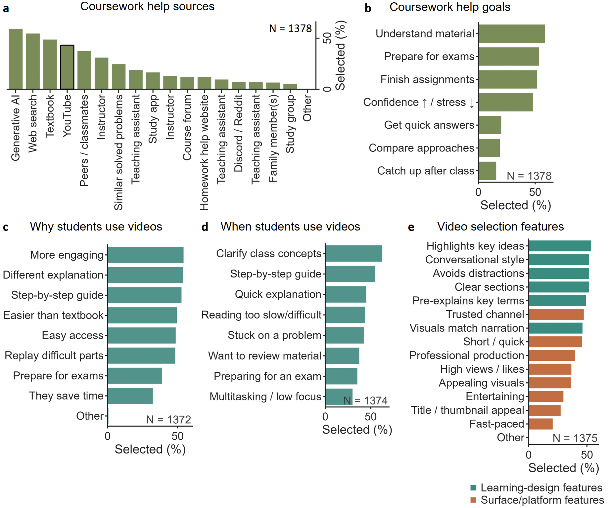
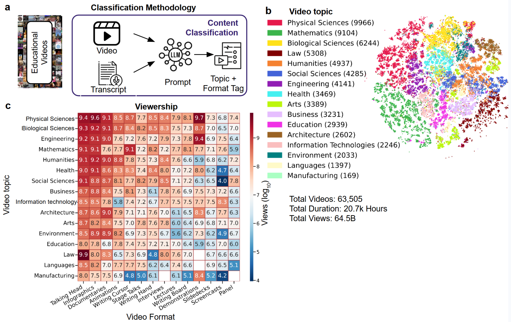
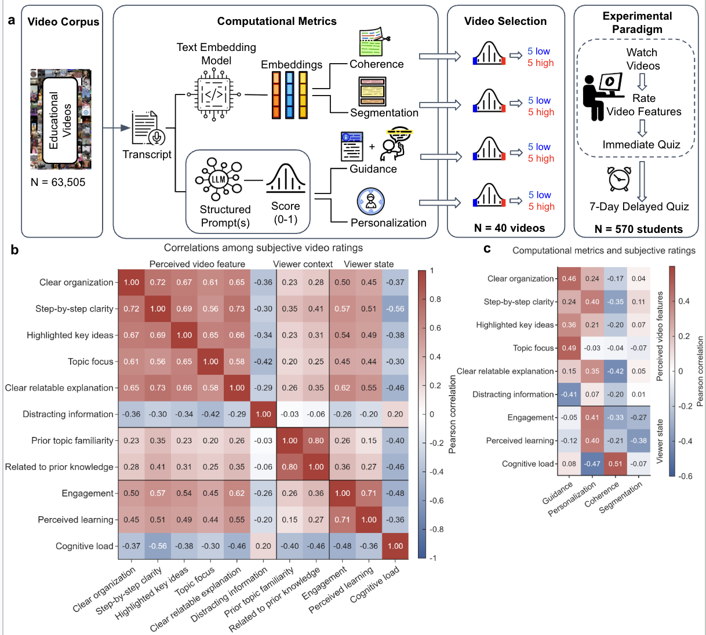
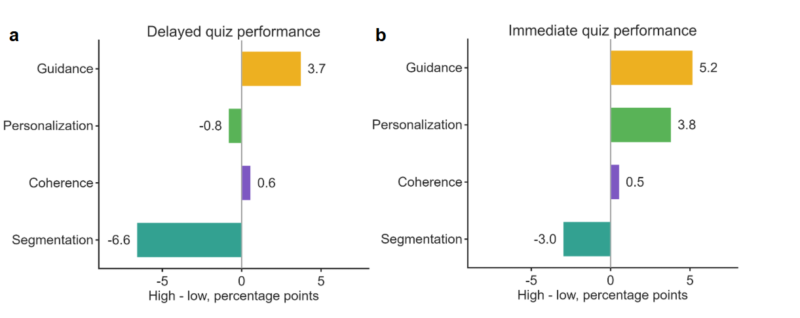
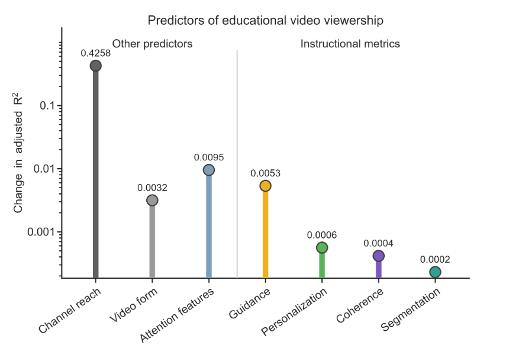

We asked whether the instructional design of an educational video predicts two different things: whether students learn from it, and whether it gets watched. Across a student survey, a 63,505-video corpus, a 570-student learning experiment and a platform-wide viewership model, the answer was the same — these two questions have different answers.
In a survey of 1,378 students, YouTube or other educational video platforms were among the most frequently used coursework-help resources (43.3%) — more commonly selected than classmates (37.3%) or professors (31.0%). The most common goals were to understand the material deeply (58.7%), prepare for an exam (53.6%) and complete a specific assignment (51.8%).
When asked what makes them more likely to pick a video, students cited both learning-design cues and platform cues, in close to equal measure:
That students weigh both kinds of cues side by side is the question the rest of the paper follows: do the instructional features they value actually predict learning, and do those same features predict which videos get watched?

We built a corpus of 63,505 educational videos spanning 20.7 thousand hours and 64.5 billion views, classified by topic (physical sciences, mathematics, biological sciences, law, humanities, social sciences, engineering, health, business, education, architecture, languages, the arts, and more) and by presentation format (talking-head, infographic, documentary, animation, writing-cursor tutorial, stage talk, lecture, demonstration, interview, slide deck, screencast, panel discussion).
Viewership was not evenly distributed across this space. Some topic–format combinations, such as talking-head videos on law, drew substantially more views than others covering the same material in a different format.

Coherence, segmentation, guidance and personalization are instructional-design principles that have been studied in controlled lab settings but rarely measured at the scale of an actual video platform. We computed all four from each video's transcript — coherence and segmentation from sentence-embedding structure, guidance and personalization via structured large-language-model scoring — across all 63,505 videos.
Does the video direct attention to what matters — highlighting key ideas, signalling structure, introducing concepts before using them?
How conversational the explanation is — direct address, contractions, natural spoken language versus formal, academic delivery.
How tightly the explanation stays centered on one topic, measured from sentence-to-sentence semantic continuity.
How clearly the video is divided into distinct, balanced sections, detected from shifts in topic structure across the transcript.
Before using these metrics for anything, we checked that they tracked what viewers actually noticed. Guidance was positively associated with viewers' ratings of clear organization and highlighted key ideas; personalization was associated with step-by-step clarity and perceived learning; coherence showed a more complex profile, also correlating with higher reported cognitive load.

570 students watched videos selected to be high or low on one of the four metrics, topic-matched in pairs, then completed a quiz immediately and again seven days later. The four dimensions did not behave the same way.
Immediate quiz, high-scoring minus low-scoring videos, percentage points.

Participants also completed a digit-span working memory capacity (WMC) task. Highly segmented videos impaired quiz performance across all capacity groups, but not equally.
| WMC group | Immediate quiz (high − low seg.) | Delayed quiz (high − low seg.) |
|---|---|---|
| Low WMC | −7.8 pp | −8.2 pp |
| Mean WMC | −3.5 pp | −7.3 pp |
| High WMC | +0.9 pp | −6.3 pp |
On the immediate quiz, high-WMC students were essentially unaffected by segmentation (+0.9 pp), while low-WMC students lost 7.8 percentage points. A week later, though, performance had dropped across every capacity group, including high-WMC students — the short-term advantage of higher working memory did not carry over to long-term retention.
If online attention tracked pedagogical quality, instructional design should explain a meaningful share of why some educational videos get more views than others. We fit a model of video viewership using channel reach (subscriber count, channel video count), video form (age, duration), attention features (word rate, visual cut rate) and all four instructional metrics, then measured how much predictive power was lost when each block was removed.
Change in adjusted R² when each predictor block is removed from the full viewership model.
Removing channel reach alone cost the model 0.43 in adjusted R² — more than 80 times the loss from removing guidance (0.005), the strongest instructional predictor, and hundreds of times the loss from removing coherence or segmentation individually.

A well-designed video from a less visible channel may therefore be less likely to reach students than a less effective video from a prominent channel. Online attention and instructional quality are not the same signal, and the platform does not treat them as one.
The full corpus, mapped by topic or format and colored by category, is browsable directly — hover any point for its title, channel and instructional-metric scores.
Explore the corpus →